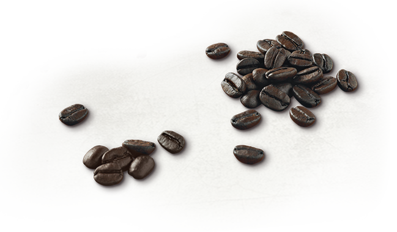

And that is our goal as all coffees are grown to the highest quality standards, using responsible coffee growing principles, and ethical coffee
We believe that a better cup of coffee will also lead to a better future for farmers and a more stable climate for the earth.
 |
We take great care when harvesting. We select only the most ripe coffee cherries. Red, ripe and perfect. Then we do the sorting multiple times by size, color, and density. Our defect tolerance? Straight up is zero. Some might call it a phobia. We call it good coffee. |
|  |
We only take good coffee. So if we can help farmers grow better coffee beans, we will. Every farmer, everywhere. Accordingly, we have farmer support centers on four continents; There, our agronomists test the soil, test samples and provide free advice to every coffee farmer when they have a question. |
|
We take great care when harvesting. We select only the most ripe coffee cherries. Red, ripe and perfect. Then we do the sorting multiple times by size, color, and density. Our defect tolerance? Straight up is zero. Some might call it a phobia. We call it good coffee. |
We enjoy - again, again, again.
We try more than 1000 cups of coffee a day to test the superior taste that all of us (including you) desire. A batch of coffee is tested at least three times before approval, so every time you take a sip of Starbucks® coffee, it will be your favorite sip.